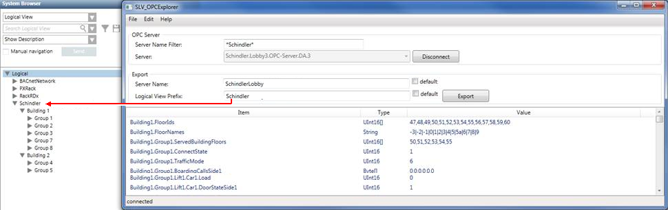

Creating the Export File
- There is an online connection to the Schindler Server.
- In Windows explorer, select file SLV_OPCExplorer.exe in folder [Installation Drive]:\[Installation Folder]\GMSMainProject\bin.
- The SLV_OPC Explorer dialog box opens. The default settings are displayed.
- Select the Server name filter and delete the filter.
- Select the Server:
a. In the drop-down list, select the server.
b. Click Connect. - Select Server name:
a. Clear the Default check box.
b. In the Server name field, enter a description, for example, Main street. The description is used hierarchically in the Management View above the building designation.
Example
Project > Subsystems > [Network name] > Zug street > Building 1. - Select the Logical View Prefix:
a. Clear the Default check box.
b. In the Logical View Prefix field, enter a description, for example, Main street. The description is used hierarchically in the Logical View above the building designation.
Example
Logical > Zuger Street > Building 1> Group > Elevator 1> Elevator 1 Car 1. - Click Export.
- Select the target folder.
- Click Create.
- The Schindler export file is created.
